Setlist
The basic structure of the Eras Tour is that she will play some songs from each era/album, then undergo a costume change and transition to the next. Each era also has a color associated with it, with Debut (Taylor Swift) being green, Fearless (Taylor's Version) being yellow, Speak Now (Taylor's Version) being purple, Red (Taylor's Version) being red, 1989 (Taylor's Version) being light blue, reputation being black, Lover being pink, folklore being gray, evermore being brown, and Midnights being dark blue/blue. Many people believe Lover is first as it is the first album that she actually owns. The order of albums played are as followed:
- Lover
- Fearless (Taylor’s Version)
- evermore
- reputation
- Speak Now (Taylor’s Version)
- Red (Taylor’s Version)
- folklore
- 1989 (Taylor’s Version)
- Acoustic Set [see SURPRISE SONGS]
- Midnights
Before the actual concert starts, usually there will be an opening act (Check Miscalleneous Fun Facts (and Openers)). After the opening act, she will play the well-known Eras Tour intro, featuring songs/words from/about each era:
It's been a long time coming... (Miss Americana & The Heartbreak Prince)
It's been a long time coming... (Miss Americana & The Heartbreak Prince)
It's been a long time... (Miss Americana & The Heartbreak Prince)
It's you and me... (Miss Americana & The Heartbreak Prince)
It's been a long time coming... (Miss Americana & The Heartbreak Prince)
It's been a long time coming... (Miss Americana & The Heartbreak Prince)
It's you and me... (Miss Americana & The Heartbreak Prince)
It's fearless (Fearless)
It's been a long time coming... (Miss Americana & The Heartbreak Prince)
Big reputation (End Game (feat. Ed Sheeran, Future))
It's been a long time coming... (Miss Americana & The Heartbreak Prince)
And they said speak now (Speak Now)
It's been a long time coming... (Miss Americana & The Heartbreak Prince)
Into folklore (gold rush -- actually from evermore)
My name is Taylor, and I was born in 1989! (1989 World Tour) (It's been a long time coming... (Miss Americana & The Heartbreak Prince))
It's you and me.. (Miss Americana & The Heartbreak Prince)
Evermore (evermore)
It's you and me.. (Miss Americana & The Heartbreak Prince) (It's been a long time coming... (Miss Americana & The Heartbreak Prince))
But loving him was red (Red)
R-r-r-red, R-r-red (Red)
It's been a long time coming... (Miss Americana & The Heartbreak Prince)
Meet me at midnight (Lavender Haze)
Lover (Lover)
Nice! (Bejeweled)
Nice! (Bejeweled)
Lover (Lover)
It's been a long time coming but (Miss Americana & The Heartbreak Prince)
[Transitions into Miss Americana & The Hearbreak Prince]
Eras Tour Intro (YouTube)
Full Setlist:
Lover:
Miss Americana & The Heartbreak Prince (shortened)
Cruel Summer
The Man
You Need To Calm Down (shortened)
Lover
The Archer
Fearless (Taylor's Version):
Fearless (shortened)
You Belong With Me
Love Story
evermore:
'tis the d-mn season
willow
marjorie (shortened)
champagne problems
tolerate it
reputation:
…Ready For It?
Delicate
Don’t Blame Me
Look What You Made Me Do
Speak Now (Taylor's Version):
Enchanted
Long Live
Red (Taylor's Version):
22
We Are Never Ever Getting Back Together
I Knew You Were Trouble
All Too Well (10 Minute Version)
folklore:
the 1
betty
the last great american dynasty
august
illicit affairs (shortened)
my tears ricochet
cardigan
1989 (Taylor's Version):
Style
Blank Space
Shake It Off
Wildest Dreams (shortened)
Bad Blood (shortened)
Acoustic Set:
Surprise Guitar Acoustic Song
Surprise Piano Acoustic Song
Midnights:
Lavender Haze
Anti-Hero
Midnight Rain
Vigilante Sh-t
Bejeweled
Mastermind
Karma
Here’s a link to a YouTube playlist containing all the songs of the eras tour (in order, all surprise songs): The Eras Tour Setlist--YouTube
Outfits
Each era's costume (usually shown, sometimes she wears other slightly different outfits):
Lover (Miss Americana & The Heartbreak Prince, Cruel Summer, Lover, The Archer):
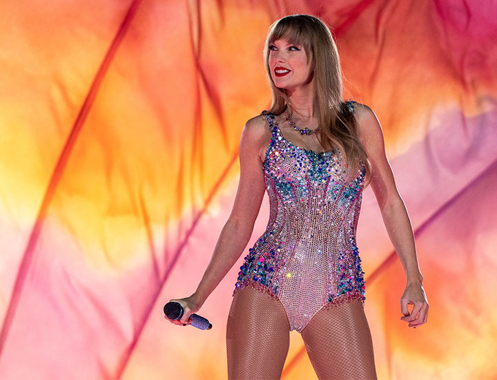
Lover (The Man):
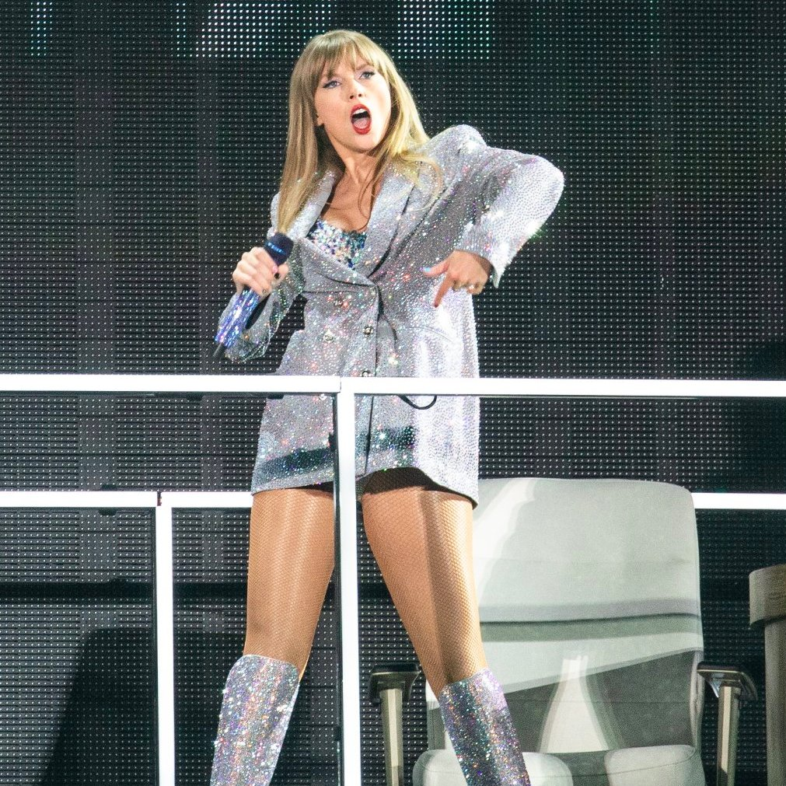
Fearless (Taylor's Version) (Fearless, Love Story, You Belong With Me):
evermore ('tis the d-mn season, marjorie, champagne problems, tolerate it):
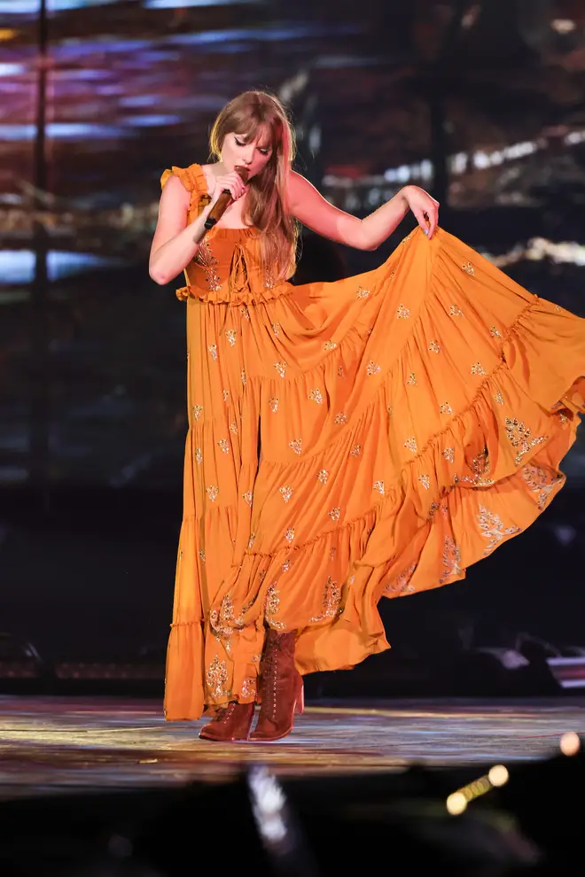
evermore (willow):
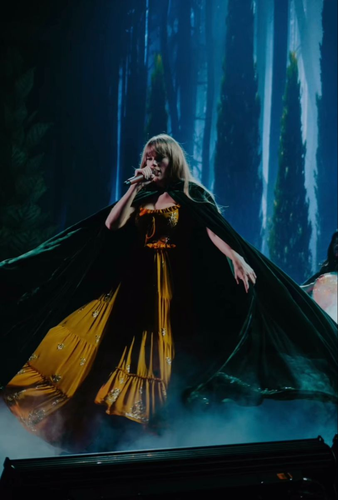
reputation (...Ready For It?, Delicate, Don't Blame Me, Look What You Made Me Do):
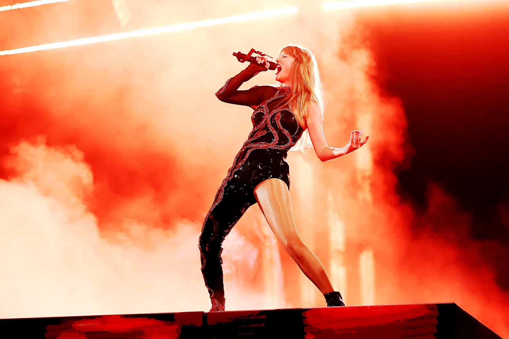
Speak Now (Taylor's Version) (Enchanted, Long Live):
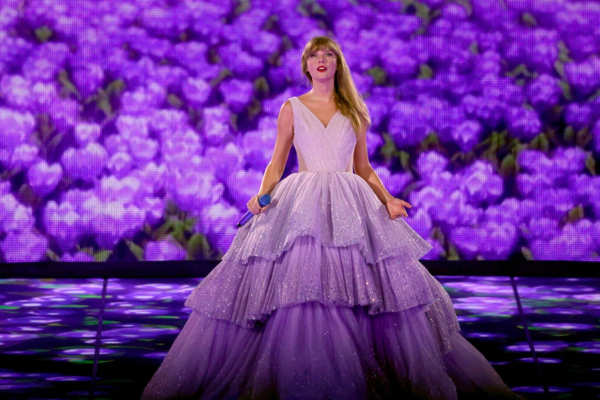
Red (Taylor's Version) (22):
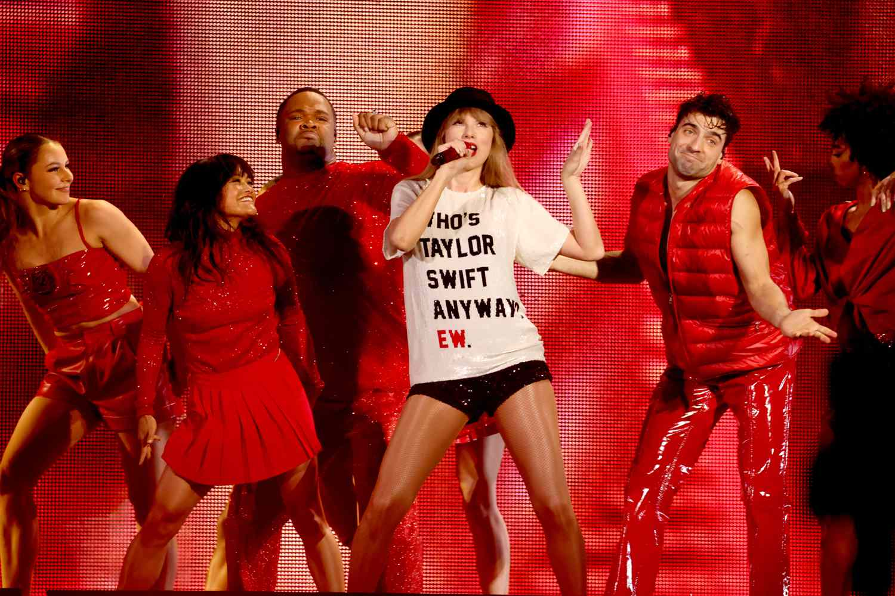
Red (Taylor's Version) (We Are Never Ever Getting Back Together, I Knew You Were Trouble):
Red (Taylor's Version) (All Too Well (Ten Minute Version)):
folklore (the 1, betty, the last great american dynasty, august, illicit affairs, my tears ricochet, cardigan):
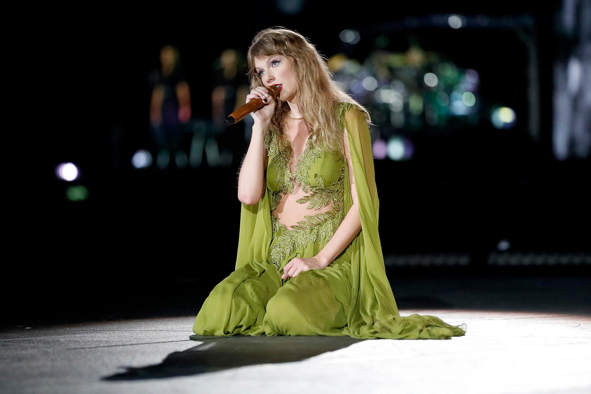
folklore [alternate] (the 1, betty, the last great american dynasty, august, illicit affairs, my tears ricochet, cardigan):
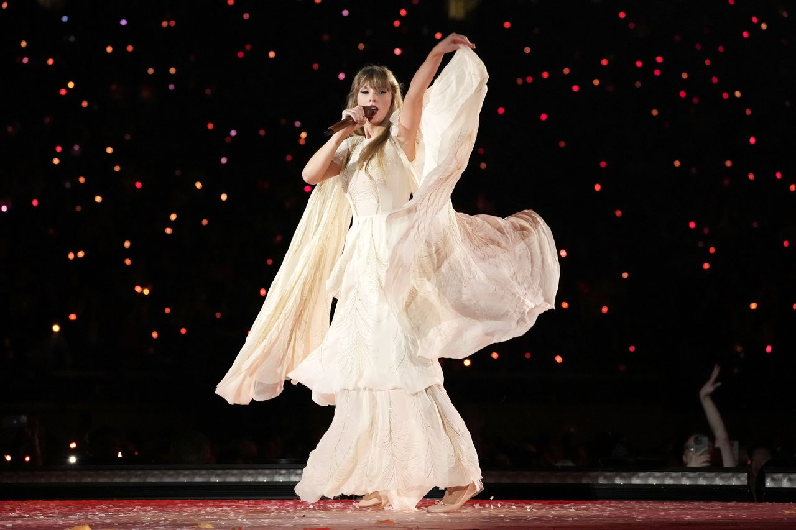
1989 (Taylor's Version) (Style, Blank Space, Shake It Off, Wildest Dreams, Bad Blood):
Acoustic Set:
Midnights (Lavender-Haze):
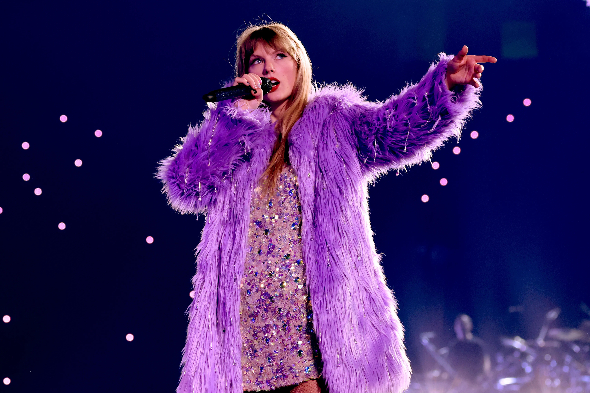
Midnights (Anti-Hero, Midnight Rain):
Midnights (Midnight Rain, Vigilante Sh-t, Mastermind):
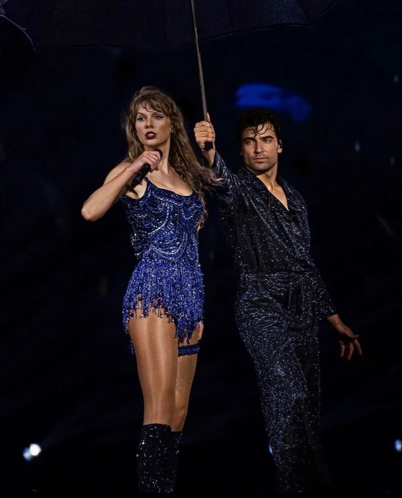
Midnights (Karma):
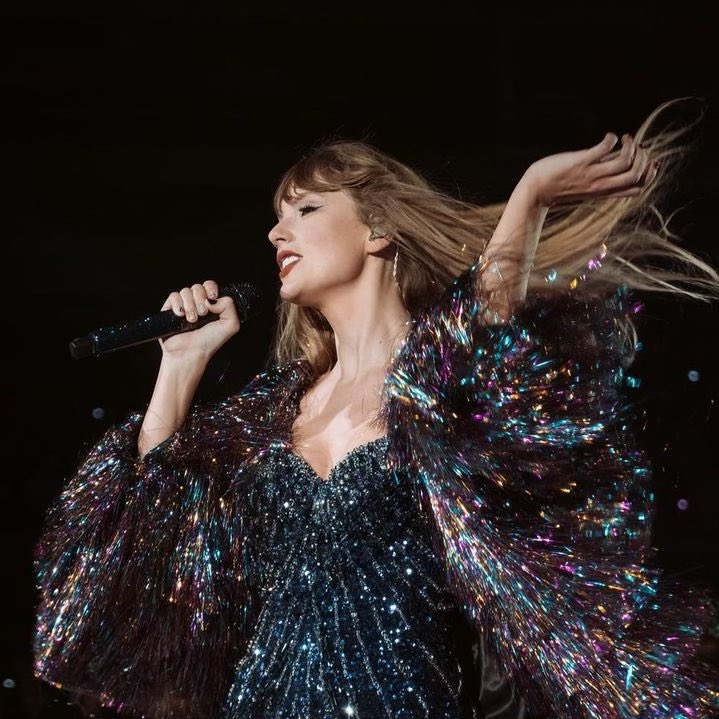